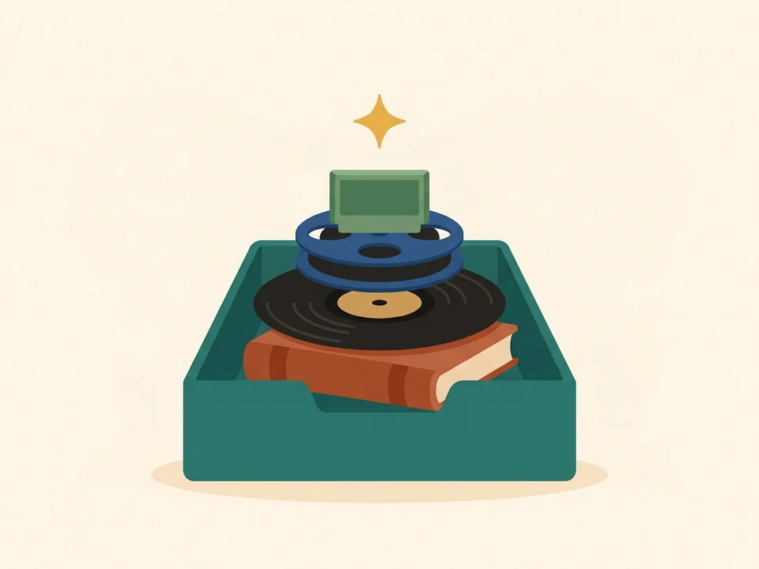
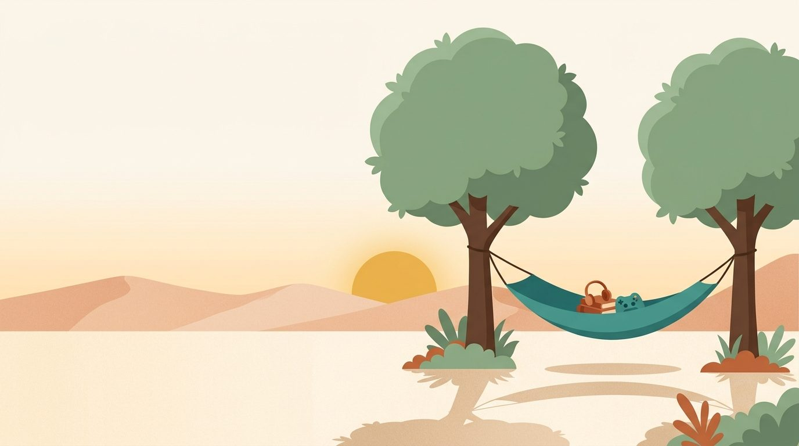
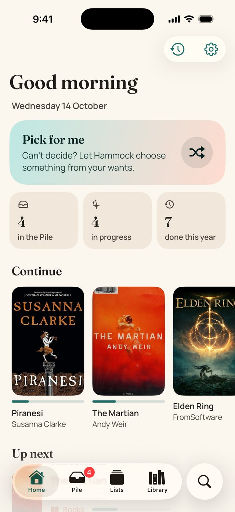
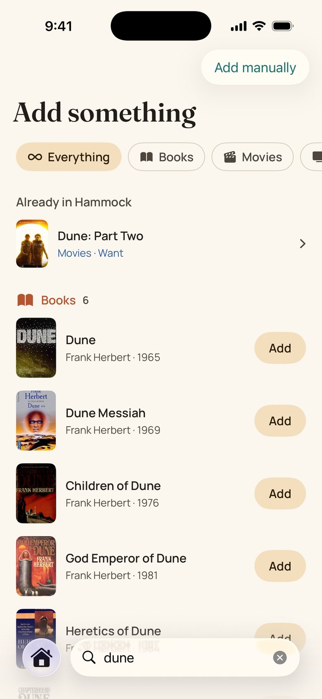
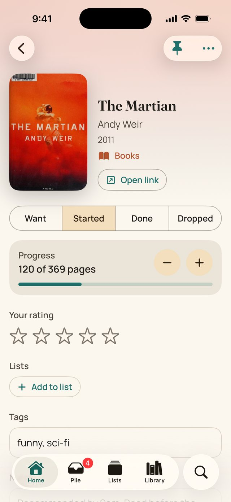
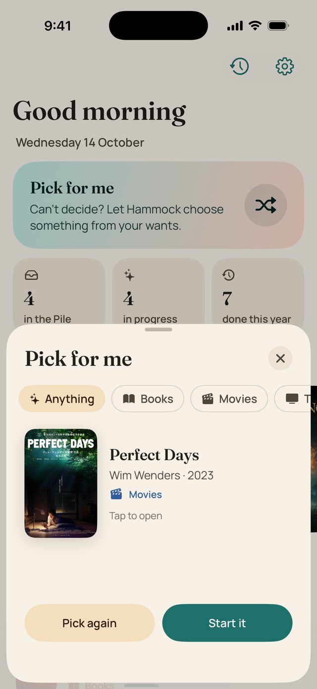
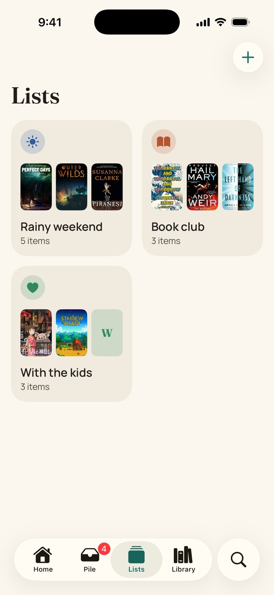
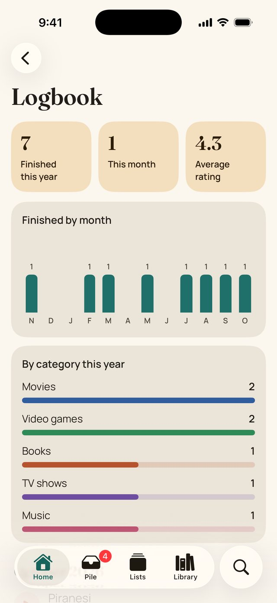
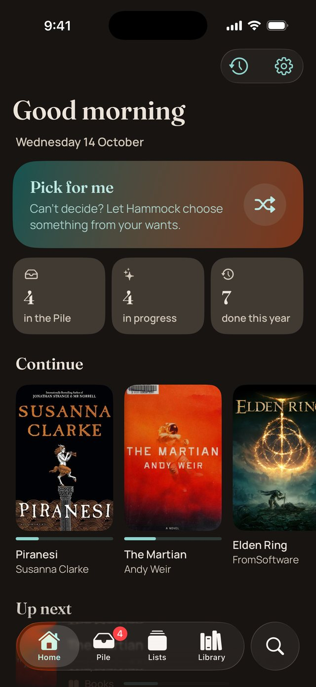

Capture
Save from any app, in one tap
Tap Share in Safari, Letterboxd, Goodreads, Apple Podcasts, Apple Music or YouTube and choose Hammock. It reads the page, guesses the category, grabs the cover and drops it in the Pile.
Every book, film, series, game, podcast and album you want to get to, kept together and out of your head. Save it from any app's share sheet. When you can't decide, let Hammock pick.
No account. Nothing leaves your iPhone. Free to use, with a single one-time Plus unlock and no subscription. Also on Android.


Hammock is built around the three things you actually do with downtime: notice something worth getting to, choose what to do tonight, and look back on what you loved.

Tap Share in Safari, Letterboxd, Goodreads, Apple Podcasts, Apple Music or YouTube and choose Hammock. It reads the page, guesses the category, grabs the cover and drops it in the Pile.

One tap shuffles through your wants and settles on one, by category if you like. Start it, or pick again. It's on your Home Screen, Lock Screen and in Control Center too.
Every start and finish is logged with your rating, and the year adds up into charts by month and by category. It's yours to look back on.
Serif headlines, covers that do the decorating, colour themes you can change, and a dark mode that is never pure black. Made for iOS 26, with Liquid Glass where iOS has it, and running on iOS 18 and later.
Home: continue, up next, fresh in the Pile

One search, every catalogue

Progress, rating, notes and tags

Pick for me

Lists that mix books, films and games

Your year in charts

Dusk, the dark theme
Share a link from any app, search a title, or add by hand. New finds land in the Pile until you sort them.
Swipe right to start, left to let go. Put things in lists that can mix books, films and games: "Rainy weekend", "Book club", "With the kids".
Tap Pick for me when you can't choose. Narrow it to a category, or let it surprise you.
Track pages, episodes or hours, rate it in half stars, jot a note. The logbook keeps the story of your year.
Other trackers make you choose a category first. Hammock searches books, films, series, games, podcasts and music at the same time, shows what's already in your library, and adds with one tap.
The cover zooms open into a page with its own soft backdrop. Status, progress, half-star ratings, tags, notes and lists sit in one quiet column, with a gentle haptic when something changes.
Hammock is a native iPhone and iPad app, not a port in disguise. It uses the parts of iOS you already reach for.
Hammock sits in the share sheet's row of apps, wherever there is a link. One tap reads the page and saves it, without leaving the app you were in.
Pick for me on your Home Screen in two sizes, with a shuffle button that works right there, and a Lock Screen widget for tonight's suggestion. Part of Hammock Plus.
Add a Pick for me button to Control Center, or ask Siri to "pick something in Hammock".
Every cover opens a menu to start, finish, pin, add to a list or delete, with a preview of the item above it.
VoiceOver labels everywhere, ratings you can adjust with a swipe, Dynamic Type from small to huge, and calmer motion when Reduce Motion is on.
One purchase covers both. On iPad the library becomes a poster wall, pages keep a comfortable reading width, and the tab bar opens into a sidebar.
Hammock for Android and Hammock for iPhone write the same backup file. Export it on your old phone, open it on your iPhone, and your items, lists, tags, ratings and logbook come with you. It works the other way too. How to move
No subscription, no ads, no account. Hammock Plus is a single purchase through the App Store, yours forever, shared with your family through Family Sharing and restorable on any device signed in to the same Apple Account.
No. There is no sign-up, no login and no server. Everything lives in the app's private storage on your device, and you can export a backup file whenever you like.
Hammock only talks to the internet when you ask it to: searching a catalogue sends your search words to that catalogue, saving a link fetches that page once to read its title and cover, and covers are downloaded from where they live. There are no analytics, no ads and no tracking. See the privacy policy.
Books come from Open Library, films from Wikipedia, series from TVmaze, podcasts and music from Apple's public catalogue, and PC games from Steam. Anything else, from board games to recipes, can be added by hand or by sharing a link.
Yes. Export a backup in Hammock for Android (Settings, Your data, Export backup), get the file to your iPhone (email, Google Drive or Files all work), then choose Import backup in Hammock's Settings. Nothing is deleted on import; things you already have are skipped.
No. You can share any list as a picture through the apps you already use, but there is no feed, no followers and no comments.
iPhone and iPad with iOS 18 or iPadOS 18 and later. It follows your Light and Dark setting, or you can choose one in Settings.
No. It is a single purchase through the App Store. It works on all your devices with the same Apple Account, and with Family Sharing it covers your family too. Restore it from Settings at any time.
Hammock for iPhone is in final testing. Email us and we'll send one message when it's live, and nothing else.
Tell me when it's out